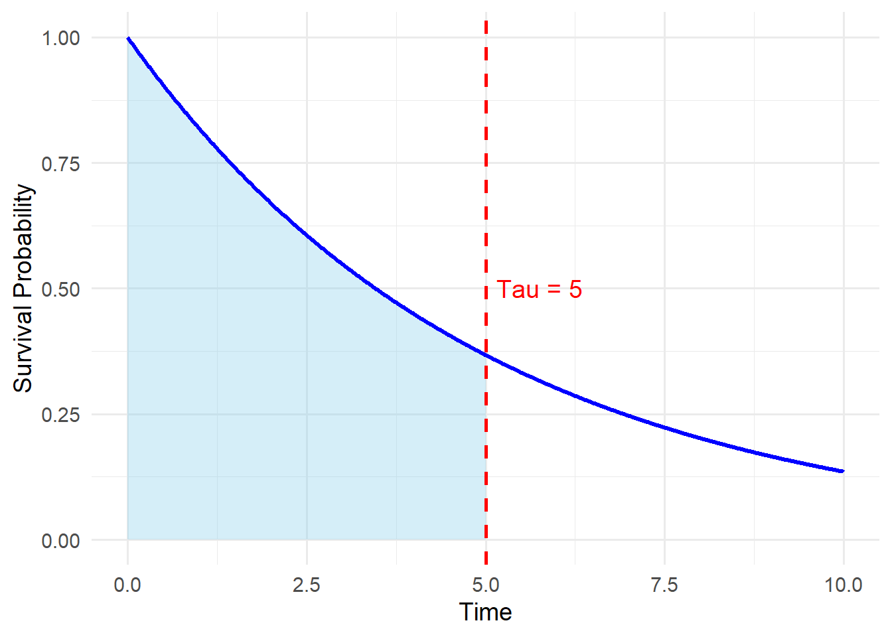

They cannot:
- adjust for confounders
- include continuous predictors
For adjusted analyses, we need regression-based approaches, such as Cox regression or RMST regression.
7 Restricted Mean Survival Time (RMST)
So far, we’ve seen that Kaplan-Meier does not adjust for confounders. To handle covariates, we need approaches like:
- Cox regression
- RMST regression
- Parametric survival models
In censored data, the true mean survival time is often not observable. We don’t have event time for some of the individual they may not experience the event.
Because of censoring, estimating the unrestricted mean survival time is often not feasible. Instead, we define a fixed time point \(𝝉\) and focus on Restricted Mean Survival Time (RMST):
The average time survived up to time \(𝝉\).
Note
RMST is the average time survived up to a fixed time point τ.
It answers the question:
“How long, on average, do individuals remain event-free within τ months?”
Why RMST is attractive
Directly interpretable
Does not require proportional hazards
Works well when survival curves cross
Show R code
library(ggplot2)# Parameterstau <-5rate <-0.2tmax <-10# Example survival curve# S(t) = exp(-rate * t)surv_df <-data.frame(time =seq(0, tmax, by =0.01))surv_df$S <-exp(-rate * surv_df$time)# Area under curve up to tau (RMST region)surv_df_shade <-subset(surv_df, time <= tau)# Plotggplot(surv_df, aes(x = time, y = S)) +geom_area(data = surv_df_shade,aes(x = time, y = S),fill ="skyblue",alpha =0.35 ) +geom_line(linewidth =1.2,colour ="blue" ) +geom_vline(xintercept = tau,linetype ="dashed",colour ="red",linewidth =0.9 ) +annotate("text",x = tau +0.15,y =0.5,label =paste0("Tau = ", tau),colour ="red",size =5,hjust =0 ) +labs(x ="Time",y ="Survival Probability" ) +coord_cartesian(xlim =c(0, tmax), ylim =c(0, 1)) +theme_minimal(base_size =14)

8 Adjusted RMST regression in Kidney Transplant Patients
We aim to estimate the restricted mean survival time (RMST) up to \(\tau = 36\) months after kidney transplantation, and to compare outcomes between donor types while adjusting for important clinical factors.
Outcome
- Time to graft failure (months since transplantation)
Event Indicator
- Graft failure status - 1 = graft failure occurred
- 0 = censored (no failure by end of follow-up)
Main Exposure
- Donor type - Living donor
- Deceased donor
Covariates (Adjusted For)
To reduce confounding, we adjust for:
- Donor age (years)
- Recipient gender (male / female)
- Baseline eGFR at transplant (kidney function at time of surgery)
Interpretation Goal
After adjustment, the RMST contrast represents:
The average difference in graft-survival time up to \(36\) months between living and deceased donor transplants,
among patients with similar donor age, recipient gender, and baseline eGFR.
Show R code
library(survival)library(survRM2)library(survminer)library(dplyr)# -------------------- Simulate the datasetset.seed(2025)n <-1000# Donor typedonor_type <-sample(c("Living", "Deceased"), size = n, replace =TRUE)# Donor age (older for deceased donors)donor_age <-ifelse(donor_type =="Living",rnorm(n, mean =45, sd =10),rnorm(n, mean =60, sd =10))donor_age <-round(pmax(donor_age, 18))# Recipient sexrecipient_sex <-sample(c("Male", "Female"), size = n, replace =TRUE)# eGFR at transplantegfr_at_tx <-round(runif(n, min =5, max =60), 1)# Simulated survival times (longer for living donors)time <-ifelse(donor_type =="Living",rexp(n, rate =0.05), # mean ~20rexp(n, rate =0.1)) # mean ~10# Censoringcensoring_time <-rexp(n, rate =0.05)#observed_time <- pmin(time, censoring_time)observed_time <-pmax(pmin(time, censoring_time), 0.01)status <-as.integer(time <= censoring_time)# Create datasetdf <-data.frame(id =1:n,time =round(observed_time, 1),status = status,donor_type = donor_type,donor_age = donor_age,recipient_sex = recipient_sex,egfr_at_tx = egfr_at_tx)# Encode donor_type as binary: 1 = Living, 0 = Deceaseddf$donor_type_bin <-ifelse(df$donor_type =="Living", 1, 0)#----------------- Fit RMST Regression (with covariates)# Set truncation time τ (e.g., 36 months)tau <-36df$recipient_sex <-as.factor(df$recipient_sex)df$donor_type_bin <-ifelse(df$donor_type =="Living", 1, 0)df$time[df$time ==0] <-0.01covariates <-model.matrix(~ donor_age + recipient_sex + egfr_at_tx, data = df)[, -1]# Fit RMST regression modelrmst_model <-rmst2(time = df$time,status = df$status,arm = df$donor_type_bin,tau =36,covariates = covariates )rmst_model
The truncation time: tau = 36 was specified.
Summary of between-group contrast (adjusted for the covariates)
Est. lower .95 upper .95 p
RMST (arm=1)-(arm=0) 6.298 3.914 8.681 0
RMST (arm=1)/(arm=0) 1.690 1.391 2.054 0
RMTL (arm=1)/(arm=0) 0.766 0.691 0.850 0
Model summary (difference of RMST)
coef se(coef) z p lower .95 upper .95
intercept 7.102 3.909 1.817 0.069 -0.559 14.763
arm 6.298 1.216 5.179 0.000 3.914 8.681
donor_age 0.016 0.055 0.295 0.768 -0.092 0.124
recipient_sexMale -0.748 1.230 -0.608 0.543 -3.158 1.663
egfr_at_tx 0.047 0.041 1.150 0.250 -0.033 0.127
Model summary (ratio of RMST)
coef se(coef) z p exp(coef) lower .95 upper .95
intercept 2.042 0.325 6.280 0.000 7.705 4.074 14.571
arm 0.525 0.099 5.281 0.000 1.690 1.391 2.054
donor_age 0.001 0.005 0.310 0.756 1.001 0.993 1.010
recipient_sexMale -0.063 0.102 -0.617 0.537 0.939 0.769 1.146
egfr_at_tx 0.004 0.003 1.159 0.246 1.004 0.997 1.011
Model summary (ratio of time-lost)
coef se(coef) z p exp(coef) lower .95 upper .95
intercept 3.375 0.163 20.686 0.000 29.224 21.226 40.237
arm -0.266 0.053 -5.022 0.000 0.766 0.691 0.850
donor_age -0.001 0.002 -0.288 0.773 0.999 0.995 1.004
recipient_sexMale 0.031 0.051 0.603 0.546 1.032 0.933 1.141
egfr_at_tx -0.002 0.002 -1.144 0.252 0.998 0.995 1.001
Interpretation (RMST difference)
RMST (Living donor - Deceased donor) = 6.30 months95% CI: 3.91 to 8.68, p < 0.001 Interpretation: On average, recipients of living donor kidneys survive 6.3 more months event-free (up to 36 months) than those with deceased donors, after adjusting for age, sex, and eGFR at transplant.
Interpretation (RMST ratio)
RMST ratio = 1.69 (Living vs Deceased) 95% CI: 1.39 to 2.05, p < 0.001 Over the 36-month period, recipients of living donor kidneys have 69% longer average event-free survival time than recipients of deceased donor kidneys, after adjustment.
Interpretation (Covariate coefficients)
None of the covariates were significant in our simulated data but if for an example egfr was significant then the interpretation would be:
Each unit increase in eGFR at the time of transplant is associated with an additional 0.047(coefficient in the model ) months (≈3 days) of average event-free survival time over 36 months, adjusting for donor type, donor age, and recipient sex.
🧠 Think about the following before moving on:
Why do we need to choose a truncation time \(τ\)?
What happens if τ is too short or too long?
When would RMST be preferable to a Cox model?
Source Code
---title: "Lecture 1: Introduction, Kaplan–Meier and RMST"toc: truetoc-depth: 3---```{r, echo=FALSE}knitr::opts_chunk$set( message = FALSE, warning = FALSE)```## Learning objectives::: callout-noteBy the end of this lecture, you should be able to:- Describe what makes **survival** data different from standard outcomes- Explain how **Kaplan–Meier survival curves** are constructed- Interpret **censoring** in survival analysis- Identify the **limitations** of Kaplan–Meier curves- Understand the motivation for **Restricted Mean Survival Time (RMST)**- Interpret **RMST differences and ratios** in applied settings:::## What is survival data?Survival data measure the **time until a specific event occurs**.Examples in kidney research include:\- Time from transplantation to graft failure\- Time from transplant to patient death\- Time to acute rejection::: callout-note### Key feature of survival dataThe outcome is **composite**: - a **time variable** - an **event indicator**\(1 = event occurred, 0 = censored)These two components must always be analysed **together**.:::## Kaplan–Meier survival curvesA Kaplan–Meier (KM) curve estimates the **probability of remaining event-free beyond a given time**.The **KM method** is a **non-parametric** approach used to estimate thesurvival function.- It estimates the probability of surviving beyond a given time.- It appropriately handles **censoring**, where some individuals have not experienced the event by the end of follow-up.The Kaplan–Meier estimator at time $t_i$ is defined as:$$\hat{S}(t_i) = \hat{S}(t_{i-1}) \times \left( 1 - \frac{d_i}{r_i} \right)$$where:- $d_i$ is the **number of events** occurring at time $t_i$- $r_i$ is the **number of individuals at risk** just before time $t_i$::: callout-tip### How to read a Kaplan–Meier curve- The curve decreases in **steps**, not smoothly- Each drop corresponds to an **event time**- Flat sections indicate **no events**- Censored observations: - do **not** cause the curve to drop - reduce the number at risk going forward:::## Example: simple Kaplan–Meier estimateThis dataset captures the time from kidney transplantation to graft failure. The only predictor variable included is donor type.| ID | Graft failure | Time to graft failure (months) | Donor type ||----|---------------|--------------------------------|------------|| 1 | 1 | 3 | Living || 2 | 0 | 5 | Deceased || 3 | 1 | 6 | Living || 4 | 1 | 8 | Deceased || 5 | 0 | 10 | Living || 6 | 1 | 12 | Deceased |The KM estimates can be written as follows: | Sorted time | Graft failure | Number of people at risk | Survival probability ||------------|---------------|--------------------------|----------------------|| 0 | – | 6 | 1.000 || 3 | 1 | 6 | 1 × (1 − 1/6) = 0.833 || 6 | 1 | 4 | 0.833 × (1 − 1/4) = 0.625 || 8 | 1 | 3 | 0.625 × (1 − 1/3) = 0.417 || 12 | 1 | 2 | 0.417 × (1 − 1/1) = 0 |```{r,warning=FALSE}library(survival)library(survminer)df <- data.frame( id = 1:6, time = c(3, 5, 6, 8, 10, 12), status = c(1, 0, 1, 1, 0, 1))km_fit <- survfit(Surv(time, status) ~ 1, data = df)ggsurvplot( km_fit, data = df, censor = TRUE, risk.table = TRUE, xlab = "Time from transplant (months)", ylab = "Survival probability", ggtheme = theme_minimal())```::: {.callout-tip}### InterpretationAt any given time point, the survival probability represents the estimated proportionof individuals who remain event-free beyond that time.Censored individuals: - contribute information up to their censoring time - do not count as failures - do not cause drops in the curve :::## Kaplan–Meier curves by donor typeThe simulated data contains the time from kidney transplantation to graft failure. The only predictor variable included is donor type.```{r,warning=FALSE}set.seed(2025)n <- 200donor_type <- sample(c("Living", "Deceased"), n, replace = TRUE)time <- ifelse(donor_type == "Living", rexp(n, rate = 0.05), rexp(n, rate = 0.1))censoring_time <- rexp(n, rate = 0.05)observed_time <- pmin(time, censoring_time)status <- as.integer(time <= censoring_time)df <- data.frame( time = round(observed_time, 1), status = status, donor_type = donor_type)km_fit <- survfit(Surv(time, status) ~ donor_type, data = df)ggsurvplot( km_fit, data = df, risk.table = TRUE, pval = TRUE, conf.int = TRUE, legend.title = "Donor type", xlab = "Time to graft failure (months)", ylab = "Survival probability", ggtheme = theme_minimal())```## Limitation of Kaplan–Meier curves::: {.callout-warning}Kaplan–Meier curves allow **group comparison only**.They cannot: - adjust for confounders - include continuous predictors For adjusted analyses, we need regression-based approaches,such as Cox regression or **RMST regression**.:::## Restricted Mean Survival Time (RMST)So far, we’ve seen that **Kaplan-Meier** does not adjust for confounders.To handle covariates, we need approaches like: - Cox regression - RMST regression - Parametric survival models In censored data, the true mean survival time is often not observable. We don’t have event time for some of the individual they may not experience the event.Because of censoring, estimating the unrestricted mean survival time is often not feasible.Instead, we define a fixed time point $𝝉$ and focus on Restricted Mean Survival Time (RMST): The average time survived up to time $𝝉$. ::: {.callout-note}RMST is the **average time survived up to a fixed time point τ**.It answers the question:> “How long, on average, do individuals remain event-free within τ months?”:::::: {.callout-tip}### Why RMST is attractive- Directly interpretable- Does not require proportional hazards- Works well when survival curves cross:::```{r, message=FALSE, warning=FALSE}library(ggplot2)# Parameterstau <- 5rate <- 0.2tmax <- 10# Example survival curve# S(t) = exp(-rate * t)surv_df <- data.frame(time = seq(0, tmax, by = 0.01))surv_df$S <- exp(-rate * surv_df$time)# Area under curve up to tau (RMST region)surv_df_shade <- subset(surv_df, time <= tau)# Plotggplot(surv_df, aes(x = time, y = S)) + geom_area( data = surv_df_shade, aes(x = time, y = S), fill = "skyblue", alpha = 0.35 ) + geom_line( linewidth = 1.2, colour = "blue" ) + geom_vline( xintercept = tau, linetype = "dashed", colour = "red", linewidth = 0.9 ) + annotate( "text", x = tau + 0.15, y = 0.5, label = paste0("Tau = ", tau), colour = "red", size = 5, hjust = 0 ) + labs( x = "Time", y = "Survival Probability" ) + coord_cartesian(xlim = c(0, tmax), ylim = c(0, 1)) + theme_minimal(base_size = 14)```## Adjusted RMST regression in Kidney Transplant PatientsWe aim to estimate the **restricted mean survival time (RMST)** up to **$\tau = 36$ months** after kidney transplantation, and to compare outcomes between donor types while adjusting for important clinical factors. Outcome - **Time to graft failure** (months since transplantation) Event Indicator - **Graft failure status** - 1 = graft failure occurred - 0 = censored (no failure by end of follow-up) Main Exposure - **Donor type** - Living donor - Deceased donor Covariates (Adjusted For) To reduce confounding, we adjust for: - **Donor age** (years) - **Recipient gender** (male / female) - **Baseline eGFR at transplant** (kidney function at time of surgery) Interpretation Goal After adjustment, the RMST contrast represents: > The **average difference in graft-survival time up to $36$ months** between living and deceased donor transplants,> among patients with similar donor age, recipient gender, and baseline eGFR.```{r,warning=FALSE, message=FALSE}library(survival)library(survRM2)library(survminer)library(dplyr)# -------------------- Simulate the datasetset.seed(2025)n <- 1000# Donor typedonor_type <- sample(c("Living", "Deceased"), size = n, replace = TRUE)# Donor age (older for deceased donors)donor_age <- ifelse(donor_type == "Living", rnorm(n, mean = 45, sd = 10), rnorm(n, mean = 60, sd = 10))donor_age <- round(pmax(donor_age, 18))# Recipient sexrecipient_sex <- sample(c("Male", "Female"), size = n, replace = TRUE)# eGFR at transplantegfr_at_tx <- round(runif(n, min = 5, max = 60), 1)# Simulated survival times (longer for living donors)time <- ifelse(donor_type == "Living", rexp(n, rate = 0.05), # mean ~20 rexp(n, rate = 0.1)) # mean ~10# Censoringcensoring_time <- rexp(n, rate = 0.05)#observed_time <- pmin(time, censoring_time)observed_time <- pmax(pmin(time, censoring_time), 0.01)status <- as.integer(time <= censoring_time)# Create datasetdf <- data.frame( id = 1:n, time = round(observed_time, 1), status = status, donor_type = donor_type, donor_age = donor_age, recipient_sex = recipient_sex, egfr_at_tx = egfr_at_tx)# Encode donor_type as binary: 1 = Living, 0 = Deceaseddf$donor_type_bin <- ifelse(df$donor_type == "Living", 1, 0)#----------------- Fit RMST Regression (with covariates)# Set truncation time τ (e.g., 36 months)tau <- 36df$recipient_sex <- as.factor(df$recipient_sex)df$donor_type_bin <- ifelse(df$donor_type == "Living", 1, 0)df$time[df$time == 0] <- 0.01covariates <- model.matrix(~ donor_age + recipient_sex + egfr_at_tx, data = df)[, -1]# Fit RMST regression modelrmst_model <- rmst2(time = df$time, status = df$status, arm = df$donor_type_bin, tau = 36, covariates = covariates )rmst_model```::: {.callout-tip}### Interpretation (RMST difference)RMST (Living donor - Deceased donor) = 6.30 months95% CI: 3.91 to 8.68, p < 0.001Interpretation: On average, recipients of living donor kidneys survive 6.3 more months event-free (up to 36 months) than those with deceased donors, after adjusting for age, sex, and eGFR at transplant.:::::: {.callout-tip}### Interpretation (RMST ratio)RMST ratio = 1.69 (Living vs Deceased) 95% CI: 1.39 to 2.05, p < 0.001Over the 36-month period, recipients of living donor kidneys have 69% longer average event-free survival time than recipients of deceased donor kidneys, after adjustment.:::::: {.callout-tip}### Interpretation (Covariate coefficients)None of the covariates were significant in our simulated data but if for an example egfr was significant then the interpretation would be: Each unit increase in eGFR at the time of transplant is associated with an additional 0.047(coefficient in the model ) months (≈3 days) of average event-free survival time over 36 months, adjusting for donor type, donor age, and recipient sex.:::::: {.callout-question}**🧠 Think about the following before moving on:**- Why do we need to choose a truncation time $τ$?- What happens if τ is too short or too long?- When would RMST be preferable to a Cox model?:::